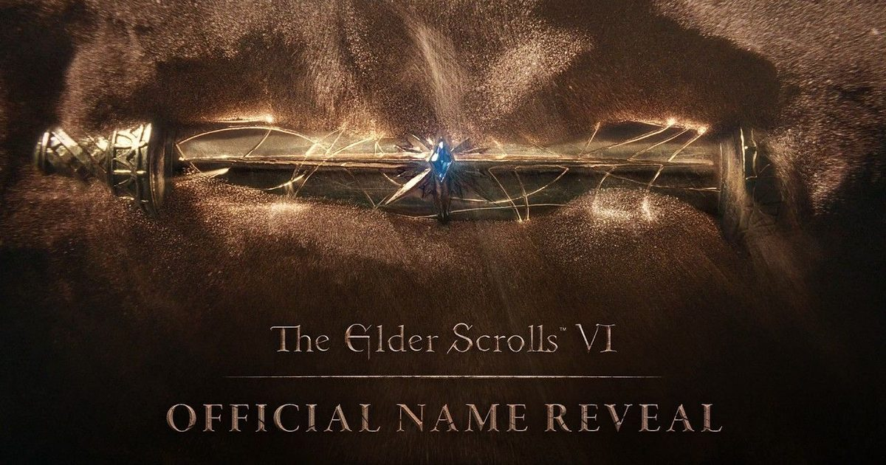

2026-11-03 · 定名深读

11 月 3 日，Bethesda Game Studios 在一段不到十分钟的四十周年纪念视频里，由托德·霍华德出面，把下一部《上古卷轴》的名字写死了： The Elder Scrolls VI: SENTINEL，中文译「哨兵」，配套 LOGO 同时放出。 官方配的推文只有一句客套：「感谢 40 年共同回忆，我们迫不及待想与大家一起创造更多。」 然后就没有然后了——没有平台，没有年份，没有玩法，没有主角。 视频里唯一称得上「技术展示」的东西是一段相当精细的沙地物理效果，配一段听起来像诗的引言： 「卷轴中只有一道微光，薄纱在我眼前缓缓揭开。一个失落的未来，一场未竟的胜利。命运让时间之沙四散飘零。」 从 2018 年 E3 那支只有山和 LOGO 的四十五秒预告，到今天，隔了八年四个月；从《天际》发售到今天，隔了十五年。 而这一次官方拿出来的，还是 LOGO。
公布了四样东西：名字、LOGO、一段沙地物理、一句诗，外加托德那句「现在是公布游戏名称的合适时机」。 没公布的东西要长得多：平台、发售年、玩法、地区、主角、引擎，以及任何一张能被叫做「游戏画面」的画面。
这是一次不含产品的官宣。 它卖的不是内容，是确认。 而确认这件事，在 2026 年比在 2018 年值钱得多——这两年微软关掉了 Tango Gameworks、Arkane Austin、Alpha Dog、Roundhouse， 我们在 10 月 23 日那篇 BioWare 关停的文章里拆过那本账； Bethesda 自己也在不到半年前经历了一轮大规模裁员。 在这个背景下，玩家对《上古卷轴 6》最真实的恐惧早就不叫「什么时候发售」了，而叫「这游戏是不是已经被悄悄砍掉」。 四十周年视频 + 托德出面 + 一个带 ™ 的正式 LOGO，三件事加起来只完成一件事：给项目存活盖章。
那段沙地物理不是预告片，它是心跳。
Sentinel 不是新造的词。它是泰姆瑞尔大陆落锤省西北海岸的一座城市，紧邻伊利亚克湾，北面与高岩省接壤，西侧是阿贝西亚海。 落锤省本身在赛洛迪尔正西、在天际西南——它先后出现在《上古卷轴：Redguard》与《上古卷轴 Online》里， 但系列正统续作从没把主场放到过落锤省。 如果这个传闻中的归属成立，那么《哨兵》会是玩家第一次以主线单机的身份，踏上红卫人的土地。
而这里有一个很容易被滑过去的事实： 系列只有两次用「城市」做副标题，一次是 1996 年的《匕落》（Daggerfall），一次是 2026 年的《哨兵》，中间隔了整整三十年。 更巧的是，《匕落》的主舞台是高岩省及其周边，而高岩正好是落锤的北邻。 三十年后，Bethesda 把镜头往西南挪了一格。 四十周年的礼物，落点回到了系列第二作抬头就能看见的那片 coastline。
| 作品 | 副标题性质 | 主舞台 | 距今 |
|---|---|---|---|
| Arena（1994） | 场地／概念 | 整个泰姆瑞尔 | 32 年 |
| Daggerfall（1996） | 城市 | 高岩省 · 部分落锤 | 30 年 |
| Morrowind（2002） | 省份 | 晨风省 | 24 年 |
| Oblivion（2006） | 位面／概念 | 赛洛迪尔 | 20 年 |
| Skyrim（2011） | 省份 | 天际省 | 15 年 |
| Sentinel（未定） | 城市（兼动词义） | 传闻为落锤省 | — |
把时间线拉直，你会发现一件有点滑稽的事：官方这次「公布」的，是一个社区已经念了五个月、并且帮忙验证过的词。
最早可追溯的猜测出现在 2026 年 6 月 9 日，一个 4chan 帖子声称副标题是 Sentinel，舞台设在落锤与高岩， 还列了大规模海战、城堡建造、莫罗温德式法术创建等玩法细节，附了一张据称是游戏内角色的截图——没有任何可验证证据，官方当时未予置评。 真正让它变成社区共识的是 8 月 11 日：微软游戏部门 CEO 阿莎·夏尔马说她当天在 Bethesda 总部看了一场《上古卷轴 6》的实机演示， 并顺手把还未知的副标题写成了八个星号——The Elder Scrolls VI: ********。 而 Sentinel 恰好是八个字母。 还有玩家回头翻出 2023 年《星空》：角色创建界面那串员工编号「190514-2009140512」，按两位一组转成字母，正好拼出 S-E-N-T-I-N-E-L。 这个彩蛋当年没人当回事，直到夏尔马那条推文之后才被重新挖出来。
于是 11 月 3 日的「重磅官宣」，盖的其实是一个早已流通的章。
一个被社区替你验证过五个月的词，信息价值早就归零了。它唯一剩下的价值是「能在什么时候被说出来」。 四十周年需要一个礼物，而 B 社手上只有一个名字。
这句话比任何公关稿都真实：他们能命名的东西，比能展示的东西多。 同样值得读的是四十周年贺词里的另一句——「《上古卷轴 5》仍是 Bethesda Game Studios 游玩人数最多的游戏」， 官方还特意向媒体确认，这个「最多」指的是累计总玩家数。 把一款十五年前的作品当成业绩写进生日致辞，这句话的重量比新作名字重得多： 它承认了在这十年里，这家工作室没有造出第二件同等量级的东西。
| 时间 | 动作 | 给了什么 | 实际信息量 |
|---|---|---|---|
| 2018 E3 | 首曝 | 山景 + LOGO，45 秒 | 它存在 |
| 2026/8/11 | 高管看完实机 | 八颗星号 | 它还在跑 |
| 2026/11/3 | 四十周年定名 | 名字 + LOGO + 沙地物理 | 它没被砍 |
三次动作，给的都不是产品，是状态。 这条线索读下来，你会突然明白这次官宣的定位：它不是「新作预告」，是「项目未死证明」，外加一张平台谈判的筹码。
八年后的第一段「实机」，给的是沙地物理——不是角色，不是战斗，不是 UI，不是一句台词。 这和《星空》当年先讲一千颗行星、先讲程序生成，是同一套话术：先证明底座还行，内容以后再说。 而外界对 Bethesda 骂得最久的，恰恰就是 Creation Engine 这个底座。 所以沙地物理同时是一份证明和一份回避：它证明有东西在跑，它回避了所有能被拿来和当下别的开放世界直接比的部分。
还有一层近乎自嘲的呼应：引言讲的是「时间之沙四散飘零」，画面展示的是沙子真的会动。 八年四个月之后，我们能确定的是——沙子做出来了。
顺带说一个词。「哨兵」和前面五部的差别在于，它首先是个动作：守卫、站岗、不移动地守着某样东西。 一座以「哨兵」为名的城，配一句「一个失落的未来，一场未竟的胜利」，官方其实是在用诗回应一个本该用日期回答的问题：为什么等这么久。 而用诗回应，翻译过来就是——他们现在还不想给日期。
Xbox 与 PC 大概率不会缺席，PlayStation 至今没有定论；而夏尔马近期重新强调了主机独占策略。 也就是说，这次定名并没有把问题从「多久」换成「什么时候」，它把问题从「会不会有」换成了「在谁家能玩到」。 对微软来说，这是它手里能把玩家拉回自家生态的最大一张牌，而在牌被翻开之前，名字先出场，是最省力的铺垫。 下一个真正值得记进日历的日子，是明年 6 月的 Xbox 展示会。
这次最值得记住的不是「哨兵」这两个字，而是官方在四十周年贺词里主动写进去的那句： 《天际》仍然是 BGS 累计玩家最多的游戏。 一家四十岁的公司，在自己生日这天能拿出来的最新成绩单，是一款十五年前的游戏。 这句话比任何一条传闻都更清楚地描述出 Bethesda 当前的处境——它手上最值钱的资产，仍然是过去。
别把这次当成官宣，当成体检报告更准确。 《上古卷轴 6》在过去两年里真正的风险从来不是跳票，是被砍；这次视频的全部价值，是把这个风险暂时摘掉。 至于名字指向哪座城、落锤省会不会真的做海战、城堡建造和法术创建是不是真的——这些都属于 4chan 那张帖子的内容， 官方一个字都没认领。传闻没有因为定名而被证实，它只是有了一个可以被贴上去的名字。
把「等待」这件事横向摆一下会更清楚：《匕落》到《晨风》隔 6 年，《晨风》到《湮灭》4 年，《湮灭》到《天际》5 年。 而《天际》到《哨兵》，光是已经等掉的就有 15 年，且终点仍未标出。 Bethesda 不是变慢了，是把一款游戏的开发周期拉到了跨越整整一代硬件的长度。 中间它完整交付了《辐射 4》《辐射 76》《星空》——也就是说，团队没有闲着，只是《上古卷轴》这支队伍一直在给别的项目让路。
给明年 6 月的 Xbox 展示会留三个可核对的数字，到时照着打勾： ① 是否给出发售年份（哪怕只是一个年份区间）； ② 是否给出完整平台名单（PlayStation 是否出现是关键）； ③ 是否出现沙子以外的实机镜头——角色、战斗、UI、一段台词，任意一项。 三项全中，才算这次等待真正进入倒计时；如果只有两项或以下，说明这次定名只是把等待又延长了一轮， 而「哨兵」这个副标题也会从「终于等到」变成「还在站岗」。
四十周年生日这天，Bethesda 拿得出手的礼物只有一个名字。 这听起来寒酸，但换个角度：一家刚裁过员的工作室，在生日会上第一件想告诉玩家的事，是那盏灯还亮着。 对一个等了八年四个月的人来说，最重要的信息往往不是「什么时候」，而是「还在」。
只是要记得，这次公布的东西里，唯一确定的只有两个字。其余全是传闻，包括落锤省、包括海战、包括那张 4chan 的截图。 沙子会动，我们已经看见了。别的，等明年六月。